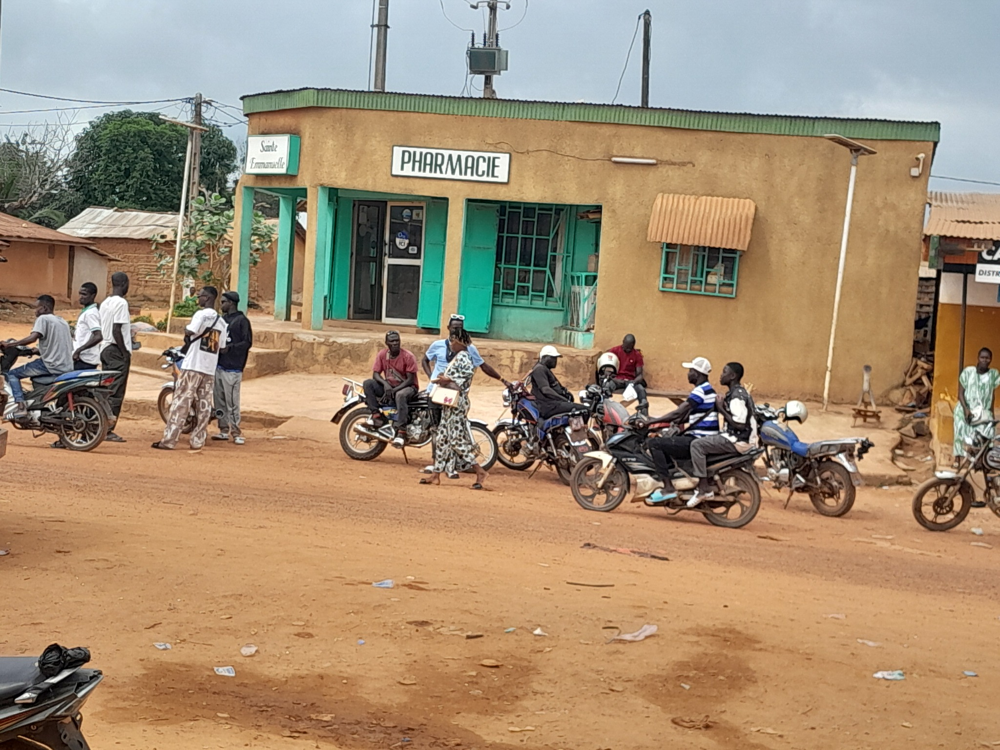

Infrastructures d’Okrouyo
Découvrez ci-dessous les infrastructures soutenues ou suivies par la MUDEO. Cliquez sur une vignette pour agrandir la photo.

Brigade de Gendarmerie

Brigade (vue 2)

Dispensaire

Logement du Sous-Préfet

Maternité
Pharmacie Ste Emmanuelle

SDA

Sous-Préfecture

Station-service 1